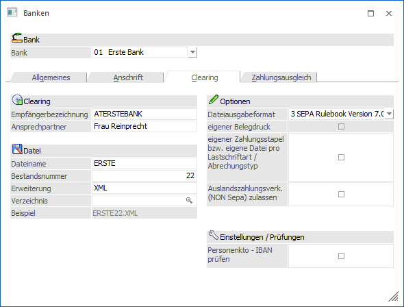
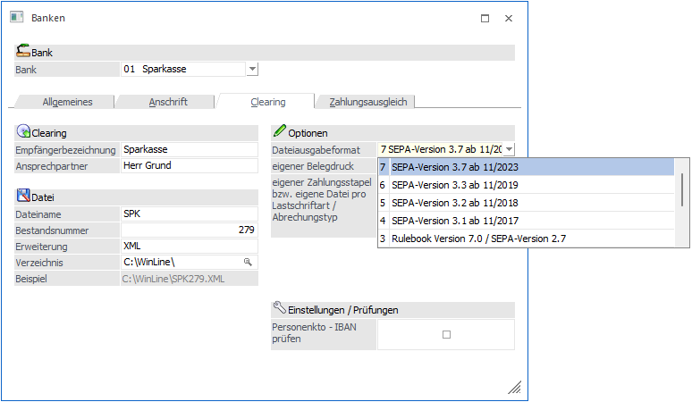
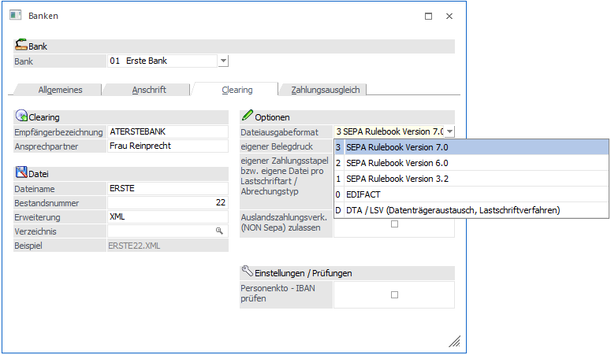
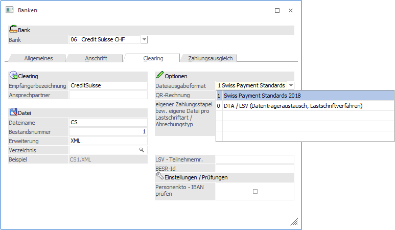
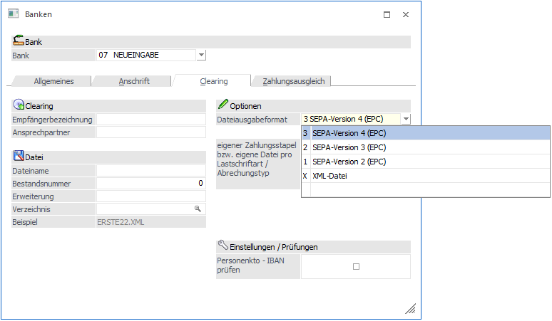
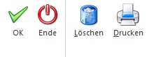
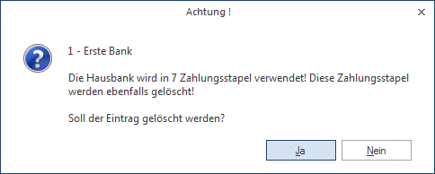
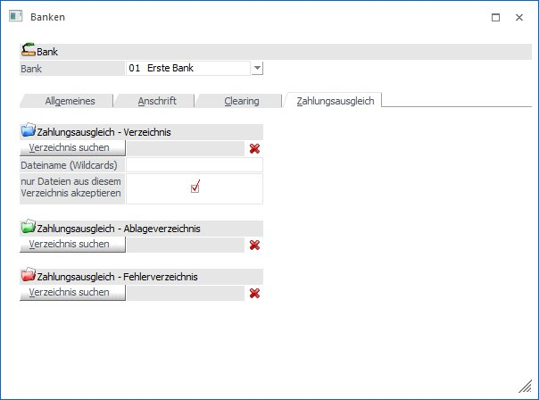

Clearing
Ø Empfängerbezeichnung
In diesem Feld wird die Kennzeichnung der Empfängerbank (z.B. ATERSTEBANKEDI) hinterlegt. Diese Kennung wird aber nur im V3-Format (EDI-Format) verwendet.
Ø Ansprechpartner
Eingabe des Ansprechpartners bei dem betreffenden Geldinstitut; 30stellig.
Datei
Ø Dateiname
10stellig, alphanumerisch. Wenn die Bank für eine Clearing-Übergabe verwendet wird, kann hier der Name der Datei eingetragen werden, die im Zuge der Clearing-Ausgabe erzeugt werden soll.
Ø Bestandsnummer
Eingabe der Bestandskontrollnummer, 4stellig, numerisch.
Die Bestandskontrollnummer stellt die Verbindung zwischen Datenträger und Begleitzettel her. Diese Nummer wird pro Zahlungsverkehr und Bank automatisch hochgezählt und das Ergebnis wird an den Dateinamen angehängt.
Ø Erweiterung
In diesem Feld kann die Dateierweiterung eingegeben werden, unter der die Clearing-Datei gespeichert werden soll - z.B. TXT.
Ø Verzeichnis
Durch Anklicken des "Verzeichnis suchen"-Buttons kann aus allen verfügbaren Laufwerken ein Verzeichnis ausgewählt werden, in dem die durch das Clearing erstellte Datei abgestellt werden soll. Mit dem Button kann der gespeicherte Pfad wieder gelöscht werden.
Hier könnte z.B. das Programmverzeichnis der Telebanking-Software eingetragen werden, aus dem die Daten übermittelt werden.
Hinweis
Erfolgt die Clearing-Ausgabe aus der MWL heraus, muss ein Pfad eingetragen werden, der vom Server aus erreichbar ist.
Ø Beispiel:
In diesem Feld wird das zusammengesetzte Ergebnis aus den Feldern "Dateiname", "Bestandsnummer", "Pfad" und "Erweiterung" angezeigt. Dadurch lässt sich leicht feststellen, wo und unter welchem Namen die nächste Clearing-Ausgabe für diese Bank stattfindet.
Optionen
Ø Dateiausgabeformat
Über eine Auswahllistbox kann das jeweilige Format für die Clearing-Datei ausgewählt werden. Je nachdem Länderkennzeichen stehen unterschiedliche Formate zur Verfügung.
Deutschland:

Folgende Ausgabeformate stehen für Banken mit dem Länderkennzeichen Deutschland zur Verfügung:
ü 7 SEPA Version 3.7 ab 11/2023
ü 6 SEPA-Version 3.3 ab 11/2019
ü 5 SEPA-Version 3.2 ab 11/2018
ü 4 SEPA-Version 3.1 ab 11/2017
ü 3 Rulebook Version 7.0 / SEPA-Version 2.7
ü 2 Rulebook Version 6.0 / SEPA-Version 2.5
ü 1 Rulebook Version 3.2 / SEPA-Version 2.4
ü 0 EDIFACT
ü D DTA / LSV (Datenträgeraustausch/Lastschriftverfahren)
Hinweis:
Für den Auslandszahlungsverkehr das Ausgabeformat "D DTA / LSV" auswählen.
Österreich

Folgende Ausgabeformate stehen für Banken mit dem Länderkennzeichen Österreich zur Verfügung:
ü 3 SEPA Rulebook Version 7.0
ü 2 SEPA Rulebook Version 6.0
ü 1 SEPA Rulebook Version 3.2
ü 0 EDIFACT
ü D DTA / LSV (Datenträgeraustausch, Lastschriftverfahren)
Ø eigener Belegdruck
Dadurch werden in der Datei auch die einzelnen Fakturen ausgewiesen, die beim Zahlungslauf beglichen bzw. eingezogen wurden. Dadurch ist die Bank in der Lage, eigene Belege für die Überweisungstexte auszugeben. Diese Checkbox kann nur aktiviert werden, wenn das Ausgabeformat "D DTA /LSV" ausgewählt ist.
Ø Auslandszahlungsverkehr (NON Sepa) zulassen
Diese Checkbox kann nur ab dem Rulebook 7.0 aktiviert werden. Ist die Checkbox aktiviert können NON-SEPA-Dateien erstellt werden. Somit sind Zahlungen in Fremdwährung möglich. Die NON-SEPA-Dateien haben am Dateinamen ein 'N' angefügt, so können diese von den SEPA-Dateien unterschieden werden.
In die NON SEPA XML Datei wird die Kontenwährung übernommen in das Tag <Ccy>xxx</Ccy> wenn im Bankenstamm folgendes hinterlegt ist:
- Kontenwährung ist eingetragen
- Dateiausgabeformat: mind. SEPA Rulebook Version 7.0
- Option "Auslandszahlungsverk.(NON Sepa) zulassen" ist aktiviert
Hinweis:
Wird in einem Zahlungslauf sowohl Inlands- als auch Auslandszahlungen durchgeführt, so wird pro Datei ein Datenträger-Begleitzettel ausgegeben.
Schweiz

Folgende Ausgabeformate stehen für Banken mit dem Länderkennzeichen Schweiz zur Verfügung:
ü 1 Swiss Payment Standards 2018
ü 0 DTA / LSV (Datenträgeraustausch, Lastschriftverfahren)
Ø QR-Rechnung
Wenn diese Option gesetzt ist (nur bei Typ "Swiss Payment Standards 2018" möglich), wird der Kurzverwendungszweck (OP-Text) der OP geprüft. Ist dieser exakt 27stellig numerisch, wird in die Clearing-Datei neben dem 27stelligen Verwendungszweck der Code für die QR-Rechnung (QRR) übergeben.
Ø LSV - Teilnehmernr
Dieses Feld ist nur vorhanden wenn es sich um eine Hausbank mit den Länderkennzeichen "CH", "FL" oder "LI" handelt.
In diesem Feld kann die Teilnehmernummer zum Lastschriftverfahren hinterlegt werden.
Ø BESR-Id
Dieses Feld ist nur vorhanden wenn es sich um eine Hausbank mit den Länderkennzeichen "CH", "FL" oder "LI" handelt. Hier kann diese hinterlegt werden.
Bank - Länderkennzeichen <> D, A, CH oder I
Für Banken mit Länderkennzeichen ungleich D, A, CH oder I stehen folgende Ausgabeformate zur Verfügung:

ü 3 SEPA-Version 4 (EPC)
ü 2 SEPA-Version 3 (EPC)
ü 1 SEPA-Version 2 (EPC)
ü X XML-Datei
Hinweis:
Das EPC-Format ist das internationale SEPA-Format. Hier sind keine länderspezifischen Änderungen enthalten.
Hinweis:
Das Ausgabeformat "XML-Datei" für Länder, bei denen keine ausprogrammierte Schnittstelle zur Verfügung gestellt werden kann. Dies ermöglicht eine strukturierte Datenausgabe in ein Textfile als XML- oder XLS-Datei.
Ø Eigener Zahlungsstapel bzw. eigene Datei pro Lastschriftart / Abrechnungstyp
Ist die Checkbox nicht aktiviert, werden maximal 4 Zahlungsstapel (CORE Einmal-/Erst-, CORE Folge-, COR1- und B2B-Lastschriften) und 3 SEPA-XML-Dateien (CORE, COR1, B2B) erstellt.
Ist die Checkbox aktiviert, werden für jede Lastschriftart ein eigener Buchungsstapel und eine SEPA-XML-Datei erstellt.
Die entsprechende Lastschrift-Art wird auch in die Bezeichnung des Stapels übernommen.
In der Zahlungsliste wird die Lastschrift-Art in der Kopfzeile jedes Kontos angedruckt. Außerdem wird am Ende der Auswertung ein Summen-Block gedruckt, der immer für alle Varianten Anzahl und Summe der Fakturen enthält. Zusätzlich werden die Summen für eine Zusammenfassung auf 4 Stapel angezeigt.
Bei der SEPA-Clearing-Ausgabe wird ebenfalls die neue Checkbox im Bankenstamm abgeprüft und bei aktivierter Checkbox werden die Dateien pro Lastschrifttyp aufgeteilt.
Die Clearing-Ausgabe / Register Editieren wurde um die Spalte "Lastschrifttyp" erweitert.
Pro XML-Datei wird dabei eine SEPA-Checkliste ausgegeben.
Der Datenträgerbegleitzettel enthält pro XML-Datei eine Zeile mit dem Gesamtbetrag und der Zahlungsform.
mesonic.ini-Eintrag:
Der mesonic.ini Eintrag
[Clearing]
CreateForeignSepaFilesCountryCode= D/A/I
steuert das Dateiausgabeformat für alle Hausbanken.
Ø Personenkto - IBAN prüfen
Wenn diese Option aktiviert ist, dann wird bei der Clearing-Ausgabe nochmals eine zusätzliche Prüfung durchgeführt, ob die Bankverbindung im Clearing mit der Bankverbindung im Personenkonto übereinstimmt. Ist das nicht der Fall, wird eine entsprechende Fehlermeldung ausgegeben.
Buttons

Ø OK
Durch Drücken der F5-Taste werden alle Eingaben gespeichert.
Ø Ende
Durch Drücken der ESC-Taste werden alle Eingaben verworfen, das Fenster wird geschlossen.
Ø Drucken
Durch Anklicken des Drucker-Buttons wird der aktuelle Bankenstamm ausgedruckt.
Ø Löschen
Mittels Löschen-Button können bestehende Banken gelöscht werden.
Dabei erfolgt eine Sicherheitsabfrage, da bei Verwendung einer Bank in einem Zahlungsstapel auch dieser gelöscht wird!

Ø Clearing-Dateiausgabe im GEMINI-Format (gilt nur für Tschechien)
Wurde im Register Anschrift das Länderkennzeichen mit CZ eingetragen, steht Ihnen automatisch im Register Clearing in der Auswahllistbox die Dateiausgabe im GEMINI-Format zur Verfügung.
Zahlungsausgleich

In diesem Register werden die Verzeichnisse hinterlegt, aus welchem sich das ZAGL die Datei holen soll und in welches die Datei nach dem ZAGL-Lauf verschoben wird. Werden im Bankenstamm keine ZAGL-Verzeichnisse hinterlegt, wird die ZAGL-Datei in die ZAGL-Verzeichnisse des Clearing-Absenderstammes verschoben.
Im Register "Zahlungsausgleich" sind folgende Felder wählbar:
Ø Zahlungsausgleich - Verzeichnis
Verzeichnis, aus dem die Datei für den Zahlungsausgleich kommt. Jeder einzelnen Hausbank kann ein eigenes ZAGL-Verzeichnis zugewiesen werden, in welchem sich die MT940-Dateien zum Einlesen für das ZAGL befinden. Das ZAGL schlägt dann die zu der ausgewählten Hausbank gehörigen Dateien in einer Dateiliste zum Einlesen vor. Mit dem Button wird das hinterlegte Verzeichnis gelöscht.
Ø Dateiname (Wildcards)
Wenn ein Zahlungsausgleich-Verzeichnis hinterlegt ist, kann in diesem Feld ein Dateifilter angegeben werden. Damit ist es möglich, nur bestimmte ZAGL-Dateien aus dem Verzeichnis auszulesen.
Beispiel:
Es sollen nur TXT-Dateien aus dem Verzeichnis im ZAGL eingelesen. Dafür muss in der Eingabe "*.txt" eingetragen werden.
Ø nur Dateien aus diesem Verzeichnis akzeptieren
Ist die Checkbox aktiviert, so wird überprüft, ob die Datei aus dem zuvor hinterlegten Zahlungsausgleich-Verzeichnis kommt. Somit kann man verhindern, dass Dateien aus dem ZAGL-Ablageverzeichnis versehentlich manuell nochmals eingelesen werden.
Ø Zahlungsausgleich - Ablageverzeichnis
Die Datei wird nach erfolgreichem ZAGL-Lauf in dieses Verzeichnis verschoben. Mit dem Button wird das hinterlegte Verzeichnis gelöscht.
Ø Zahlungsausgleich - Fehlerverzeichnis
Eine fehlerhafte Datei wird nach nicht erfolgreichem ZAGL-Lauf in dieses Verzeichnis verschoben. Mit dem Button wird das hinterlegte Verzeichnis gelöscht.